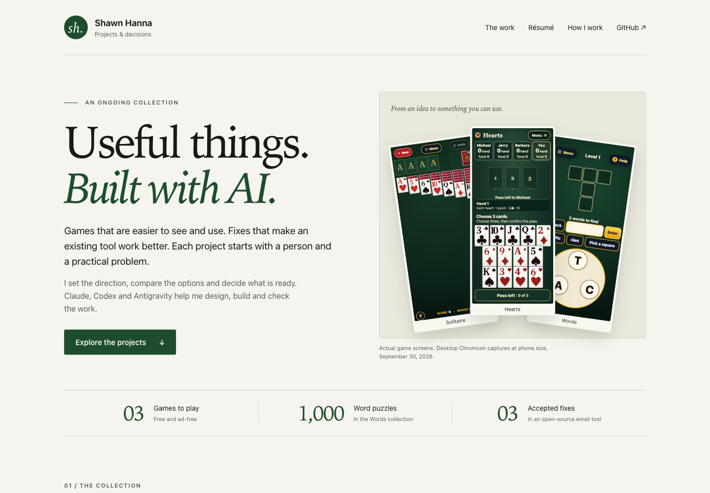

Codex
Build & test
Implementation, browser checks, fixes and evidence.
Inside the workshop / September 2026
Three AI assistants, a growing set of tools, and clear decisions about who does what.
I use Codex, Claude Code and Antigravity through command-line tools on my Mac. That lets them work with project files, run specialized software and leave something the next assistant can inspect. I choose the goal, set the boundaries and decide whether the result is useful.
The project files and helper tools live locally. The three assistants use their providers’ AI services; MLX Audio generates speech on the Mac.
A working example / From this project
While building this portfolio, I was in my car waiting for my child to finish school. From my phone, I reviewed output, requested changes and coordinated work between AI assistants.
The tools, project files and handoff records were on my Mac at home. I could keep making decisions from where I was, with an established environment ready to carry out the work.
Purpose, requirements, permissions and the final decision.
Build & test
Implementation, browser checks, fixes and evidence.
Plan & review
Planning, writing and independent technical review.
Explore & propose
Visual alternatives and bounded research. Codex or Claude checks the results.
Design contributor · AGY02 / Tools with a purpose
When an initial method falls short, I ask whether a specialized tool would help. Each addition has a practical job.
See and exercise the real page.
Run browser checks, follow links and capture layouts at phone, tablet and desktop sizes. It makes a design available for inspection.
Try a better reading voice.
I asked for a voice tool after hearing a generic computer reading. The assistant installed MLX Audio; comparing the clips let me choose the result I preferred.
Keep changes inspectable.
Record versions, inspect differences and publish approved work. A page on this portfolio can be traced back to the files that produced it.
Carry the state between assistants.
A tool catalog and task records hold the objective, instructions, owner, evidence and next action. The next assistant has a place to start.
03 / Continuity between sessions
I asked for a shared toolbox so the work could continue across assistants and usage limits. Each task has a named owner. A handoff is offered to another assistant, which must accept it before taking over.
The portfolio provides a current example: Codex has offered the completed page to Claude for review. The record still names Codex as owner while that acceptance is pending. The review is scheduled for October 3 at 3:30 a.m. Pacific.
The toolbox also produces a sample morning report using ordinary code, without an AI call. It keeps failures and missing evidence visible. That report is awaiting review; its daily schedule is not installed.
Task
Handoff offered

04 / An example you can inspect
I asked AGY to help with the design and chose Claude for the independent review. AGY proposed a visual direction and critiqued the first implementation. Codex built the page, checked the links and captured it in browsers.
I then asked for the preview to be published and for my current résumé to be linked near the top. Claude’s review is still pending. The page makes the contribution of each assistant visible, along with the decisions I kept.
What this demonstrates
My contribution is choosing the problem, assigning responsibilities, bringing in useful tools and requiring evidence before accepting an outcome. The assistants supply research, design, implementation and technical checks.
The environment is still developing. The toolbox coordinates cooperating assistants; it does not isolate their operating-system access. Its morning report has not yet demonstrated scheduled operation or measured savings. Those are the next things to establish.